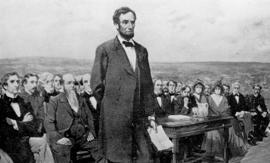

Moments of History - Unwrapped and Discovered

Purpose
This blog seeks to look back at seminal moments in history and look beyond the obvious. It attempts to analyze the nuances behind those moments, the reasons for their significance and how they went on to shape the future.
Connect With Me
Event 1 - Lincoln at Gettysburg

Context
In the summer of 1863, the Civil War in the US raged on with its outcome uncertain. To some, it appeared that the South under the command of General Robert E.Lee was in the ascendancy. With most of the war thus far having being fought on Southern territories, Lee decided to take the fight to the enemy and invaded the North in June 1863. Between 1-3 July, not by design but by accident, the Southern Army and Union Army (Army of the Potomac) met in the remote rural village of Gettysburg, situated in Southern Pennsylvania.
It was the bloodiest battle ever fought on American soil. Over 46,000 casualties were recorded (1 in every 3 soldiers on the battlefield) with over 8,000 soldiers being killed. The war would eventually end up being a turning point with the Federal Army defeating Lee's repeated attacks and forcing him to retreat. General Lee and the Confederates would never again be able to invade the North.
Lincoln's appearance
In fall of 1863, Union soldiers were reburied in a National Cemetry on the battlefield. The Committee for Consecration of the Cemetry invited Lincoln to give 'appropriate remarks'. On 19th November, 1863 Lincoln reached Gettysburg and spoke his now famous words.
The wonder of brevity
Lincoln's genius lay in using barely 3 paragraphs and 270 words to transform the national discourse on slavery. He linked the Civil War, till then attracting a lot of ambiguity from even those in the North, to the larger struggle for national consciousness in the backdrop of the Declaration of Indepedence. Better still, by referencing the larger ideals of humanity, service and dedication, Lincoln elevated the discourse on slavery to a higher pedestal.
The History and the Future
The Gettysburg Address is perhaps now the most famous speech in American Presidential history. It is a remarkable example of the power of simple oratory to convey complex ideas. Lincoln's timing, tone, content and pathos are elements modern orators seek of match as they speak to audiences. The Gettysburg Address did not end the Civil War nor did it herald the achievement of Civil Rights in the US. It is however the capstone of the national conversation of slavery and a monument to the man and the remarkable national struggle that went on to end it. Across ages, it remains a celebration of principles and higher ideals.